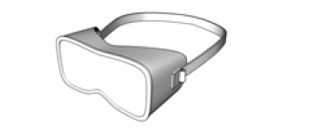
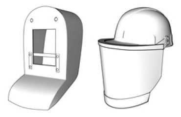
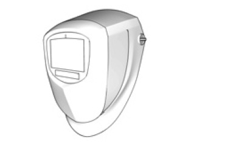
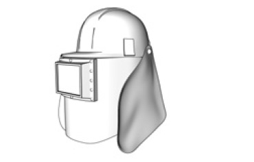

Augen- und Gesichtsschutz |
Laserschutzbrillen und Laser-Justierbrillen
Sonnenschutzbrillen
Schutzbrillen
schützen Augen und Augenbrauen

Schutzschilde/Schutzschirme
schützen Augen, Gesicht und Teile des Halses

Schweißerschutzschirme
schützen Augen, Gesicht und Hals

Schutzhauben
schützen Augen, Kopf und Hals
und – je nach Ausführung – die
oberen Schulterpartien

| 1 Schutzstufen der Filter nach DIN EN 166 | ||
| Art der Schutzfilter | Vorzahl | Schutzstufe |
Schweißer-Schutzfilter
|
– – |
4 bis 8 8 bis 15 |
Ultraviolettschutzfilter
|
2 – 3 – |
1,2 bis 1,4 1,2 bis 5 |
| Infrarotschutzfilter | 4 – | 1,2 bis 10 |
Sonnenschutzfilter
|
5 – 6 – |
1,2 bis 4,1 1,1 bis 4,1 |
| 2 Zuordnung der Kurzzeichen für die mechanische Festigkeit | |
| Kurzzeichen | Anforderung an die mechanische Festigkeit |
| ohne | Mindestfestigkeit |
| S | Erhöhte Festigkeit |
| F | Stoß mit niedriger Energie |
| B | Stoß mit mittlerer Energie |
| A | Stoß mit hoher Energie |
| 3 Kurzzeichen für die Verwendungsbereiche | ||
| Kurzzeichen | Bezeichnung | Beschreibung des Verwendungsbereichs |
| keines | Grundverwendung | Nichtspezifische mechanische Risiken, Gefährdung durch ultraviolette, sichtbare und infrarote Strahlung und Sonnenstrahlung |
| 3 | Flüssigkeiten | Flüssigkeiten (Tropfen und Spritzer) |
| 4 | Grobstaub | Staub mit einer Korngröße > 5 μm |
| 5 | Gas und Feinstaub | Gase, Dämpfe, Nebel, Rauche und Staub mit einer Korngröße < 5 μm |
| 8 | Störlichtbogen | Elektrischer Lichtbogen bei Kurzschluss in elektrischen Anlagen |
| 9 | Schmelzmetall und heiße Festkörper | Metallspritzer und Durchdringen heißer Festkörper |
07/2021